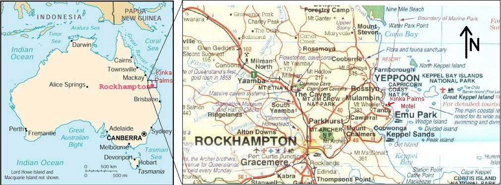

Situated on the Capricorn Coast between Yeppoon and Emu Park - right opposite the beautiful beach at Kinka Beach.
Yeppoon is 12 Km (approx) to the North, and Emu Park is 5 Km (approx) to the South. Rockhampton is 45 Km (approx) to the West.

Above is a map of Australia showing Rockhampton in red.
Kinka Beach (and Yeppoon and Emu Park) are about 45 Km East of Rockhampton in Central Queensland, Australia.
To the right of this is a map of the Capricorn Coast area of Central Queensland, Australia showing Rockhampton, and
(on the coast) Yeppoon, Emu Park, with Kinka Beach in between.
Kinka Beach is between Yeppoon and Emu Park : about 12 Km south of Yeppoon and about 5 Km north of Emu Park.
Google Maps, OpenStreetMap, etc:
Our Latitude / Longitude is: -23.215827150366287, 150.79176382718288
Note: The "Kinka Palms Motel" writing on our roadside sign has bright yellow letters on a dark blue background, and these letters glow brightly when car headlights are anywhere nearby, so even if you are arriving late, you should still see our sign. In our office / reception window, we have bright / flashing "Open" and "Vacancy" signs, and these are highly visible from the road.
If using GPS to find us, enter our address as:
934 Scenic Hwy, Kinka Beach 4703,
or if this doesn't work, then
934 Yeppoon-Emu Park Rd, Kinka Beach 4703.
There are two main ways to travel to Kinka Palms from Rockhampton - via Yeppoon or via Emu Park - both ways are about the same travel time and distance.
Here are the directions for how to find us via each route:
From Rockhampton via Yeppoon:
On the northern side of Rockhampton on the Bruce Highway, just north of Central Queensland University, turn off the highway following the signs from Rockhampton to Yeppoon. After a drive of approximately 35 minutes through some beautiful country (you will see Mt Jim Crow, Pine Mountain, and other volcanic "plugs"), you will be close to Yeppoon and you will come to a series of round-a-bouts. When you come to the last of these - it is the 3rd round-a-bout - you can only veer left into Yeppoon or turn right to head south towards Emu Park (you cannot go straight ahead at this round-a-bout). Take the right turn (heading south towards Emu Park). The road you are now on should be Scenic Hwy - follow this for about 12 Kms. You will pass by a series of beaches - Tarrangaba, Lammermoore, Rosslyn Bay Harbour, Mullambin, Causeway Lake, etc. After about 12 Km (from Yeppoon) you should then see us on the right hand side of the road - we are a white lowset U shaped group of buildings, with a roadside sign out the front saying "Kinka Palms Motel" right opposite the lovely beach at Kinka Beach.
From Rockhampton via Emu Park:
In Rockhampton, on the northern side of the "Old Bridge" and turn east down Lakes Creek Rd (a sign on the corner says "Emu Park"). You should now be heading to Emu Park. After a drive of approximately 35 minutes through the countryside, you should arrive at a little town called Emu Park. In the main part of Emu Park, you will come to a cross roads (with little shops / restaurants), and a sign showing Yeppoon to the left. Turn left and head north towards Yeppoon. About 4 Km north of Emu Park, you will come to a right hand turn (the first sign says "Capricorn Beaches" and a second smaller sign says "Kinka Beach". Turn right here (be careful, the turn is tight) and drive for about 1 Km. On the way you will pass Kinka Kippa (our local take away / cafe). After 1 Km, you should see us on the left hand side of the road - we are a white lowset U shaped group of buildings, with a roadside sign out the front saying "Kinka Palms Motel" right opposite the lovely beach at Kinka Beach.